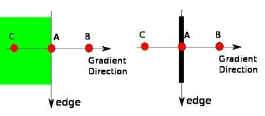
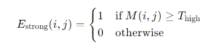
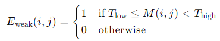
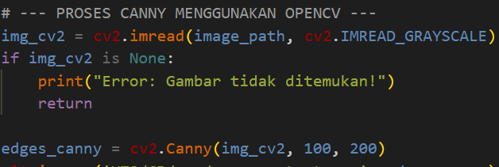
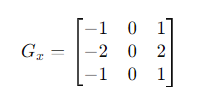
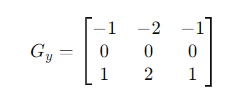
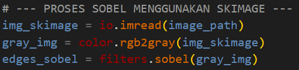
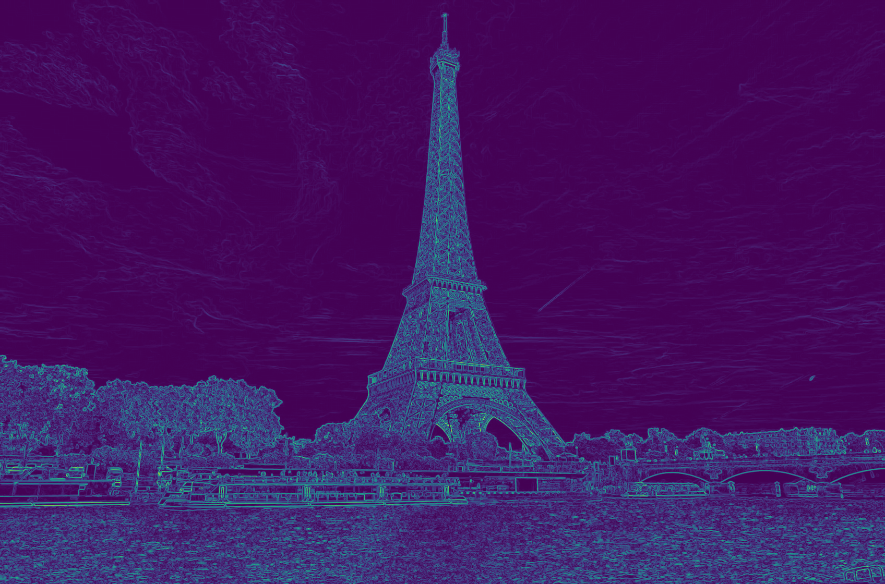
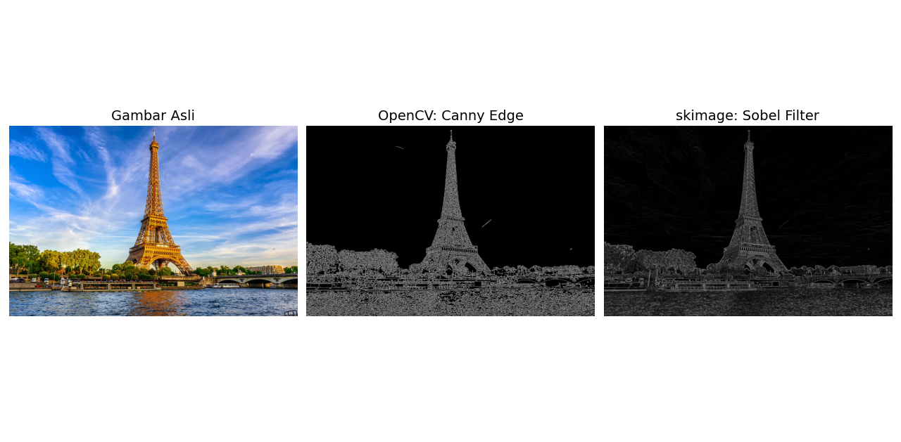

Eksplorasi Edge Detection dengan OpenCV dan scikit-image
Penentuan tepian suatu objek dalam citra merupakan salah satu wilayah pengolahan citra digital yang paling awal dan paling banyak diteliti. Proses ini seringkali ditempatkan sebagai langkah pertama dalam aplikasi segmentasi citra, yang bertujuan untuk mengenali objek-objek yang terdapat dalam citra ataupun konteks citra secara keseluruhan.
Pada artikel ini saya akan mencoba menggunakan 2 metode deteksi tepi menggunakan bantuan dari libary python. Dan untuk gambar target saya akan menggunakan menara Eiffel sebagai objek penelitian.
Canny Edge Detection Menggunakan OpenCV pada Python
Algoritma Canny dikenal karena akurasinya yang tinggi. Ia menggunakan proses multi-tahap yang mencakup penghapusan noise menggunakan Gaussian filter, menemukan gradien intensitas citra, dan melakukan hysteresis thresholding untuk memutuskan garis mana yang benar-benar merupakan tepi.
Berikut langkah-langkah langkah Canny Edge Detection:
Noise Reduction menggunakan Gaussian Blurring Langkah pertama dalam algoritma deteksi tepi Canny adalah menghaluskan gambar menggunakan filter Gaussian. Ini membantu dalam mengurangi kebisingan dan detail yang tidak diinginkan dalam gambar. Filter Gaussian diterapkan pada gambar untuk menggabungkannya dengan kernel Gaussian. Kernel Gaussian (atau fungsi Gaussian) didefinisikan sebagai:
Langkah ini membantu menghilangkan kebisingan frekuensi tinggi, yang dapat menyebabkan deteksi tepi palsu. Perhitungan Gradien: Setelah pengurangan noise, operator Sobel digunakan untuk menghitung intensitas gradien dan arah gambar. Ini melibatkan penghitungan gradien intensitas dalam arah x dan y (Gx dan Gy). Besaran dan arah gradien kemudian dihitung menggunakan gradien ini.
Menemukan intensitas gradien pada gambar Penekanan Non-Maksimum Untuk menipiskan tepi dan menyingkirkan respons palsu terhadap deteksi tepi, penekanan non-maksimum diterapkan. Langkah ini hanya mempertahankan maksimum lokal pada arah gradien. Idenya adalah untuk melintasi gambar gradien dan menekan nilai piksel apa pun yang tidak dianggap sebagai tepi, yaitu, piksel apa pun yang bukan maksimum lokal di sepanjang arah gradien.

Gambaran Penekanan maksimum Pada gambar di atas, titik A terletak di tepi dengan arah vertikal. Arah gradien tegak lurus terhadap tepi. Titik B dan C terletak sepanjang arah gradien. Oleh karena itu, Titik A dibandingkan dengan Titik B dan C untuk menentukan apakah titik tersebut mewakili maksimum lokal. Jika ya, Titik A melanjutkan ke tahap berikutnya; jika tidak, itu ditekan dan disetel ke nol.
Double Thresholding: Setelah penekanan non-maksimum, piksel tepi ditandai menggunakan ambang ganda. Langkah ini mengklasifikasikan tepi menjadi kuat, lemah, dan non-tepi berdasarkan dua ambang batas: tinggi dan rendah. Tepi kuat adalah piksel dengan nilai gradien di atas ambang batas tinggi, sedangkan tepi lemah adalah piksel dengan nilai gradien antara ambang batas rendah dan tinggi.
Mengingat besarnya gradien M dan dua ambang batas Thigh dan Tlow, klasifikasi dapat secara matematis dinyatakan sebagai:

Batas Kuat 
Batas Lemah 
Non-Batas Pelacakan Tepi oleh Histeresis:Langkah terakhir adalah pelacakan tepi dengan histeresis, yang melibatkan melintasi gambar untuk menentukan tepi lemah mana yang terhubung ke tepi yang kuat. Hanya tepi lemah yang terhubung ke tepi kuat yang dipertahankan, karena dianggap sebagai tepi sebenarnya. Langkah ini memastikan bahwa kebisingan dan variasi kecil diabaikan, menghasilkan deteksi tepi yang lebih bersih.
Setelah kita memahami cara kerja metode Canny. Saya akan mencoba menerapkannya menggunakan OpenCV pada Python.

Sobel Filter Menggunakan scikit-image Python
Jika Canny menghasilkan garis-garis tipis yang sangat spesifik, filter Sobel memberikan estimasi gradien dua dimensi spasial. Sobel seringkali lebih baik jika kita ingin melihat transisi kecerahan yang sedikit lebih kasar atau bertahap, alih-alih garis tegas absolut.
Operator Sobel menggunakan dua kernel konvolusi 3x3 (filter), satu untuk mendeteksi perubahan arah x (tepi horizontal) dan satu lagi untuk mendeteksi perubahan arah y (tepi vertikal). Kernel ini digunakan untuk menghitung gradien intensitas gambar di setiap titik, yang membantu mendeteksi tepinya. Berikut adalah kernel Sobel:


Setelah kita memahami cara kerja metode ini. berikut adalah source code dan hasil dari metode Sobel menggunakan scikit-image pada Python


Komperasi dan Kesimpulan
Masing-masing algoritma memiliki kelebihan tersendiri. Pemilihan antara Canny dan Sobel sangat bergantung pada tujuan akhir dari analisis citra yang sedang dibangun.
